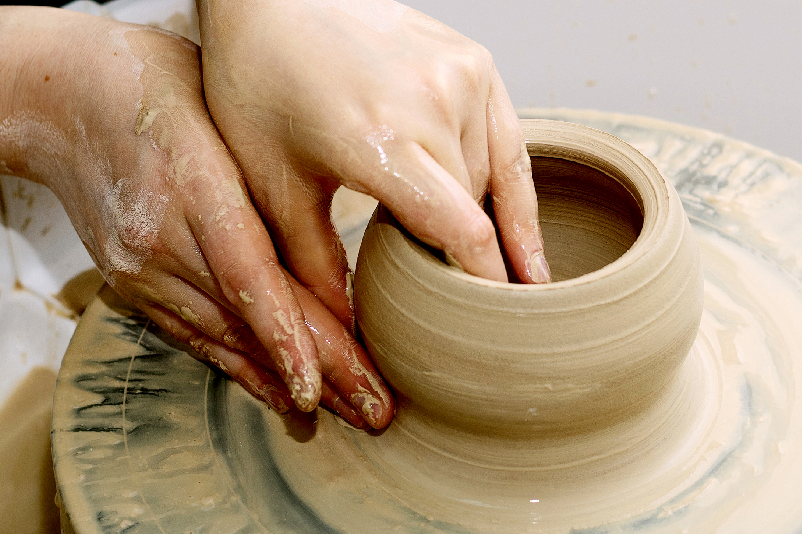
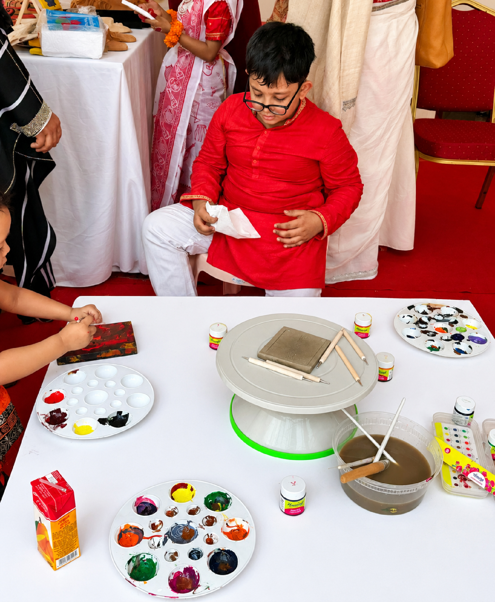

About
Klay Art Studio was built around a simple fact: that clay and paint are among the few materials patient enough to hold what a photograph cannot. In recent years the studio has appeared at institute festivals and children's workshops held in memory of the country's own masters, often placing clay in the hands of someone who has never touched a wheel before. Its history is measured less by what has sold than by who has sat at that wheel, and what they made while they were there.

At the wheel
A live demonstration during a cultural festival

A children's workshop
Held in memory of Shilpaguru Safiuddin Ahmed
The studio takes a small number of commissions each season. If something here has stayed with you, write.
Begin here